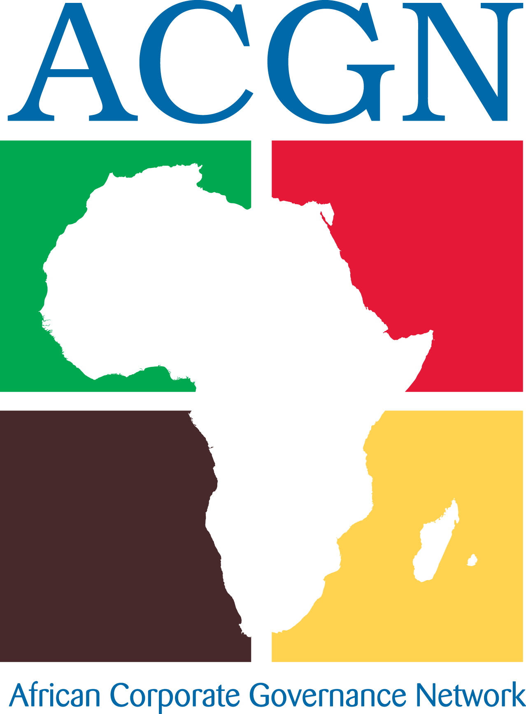
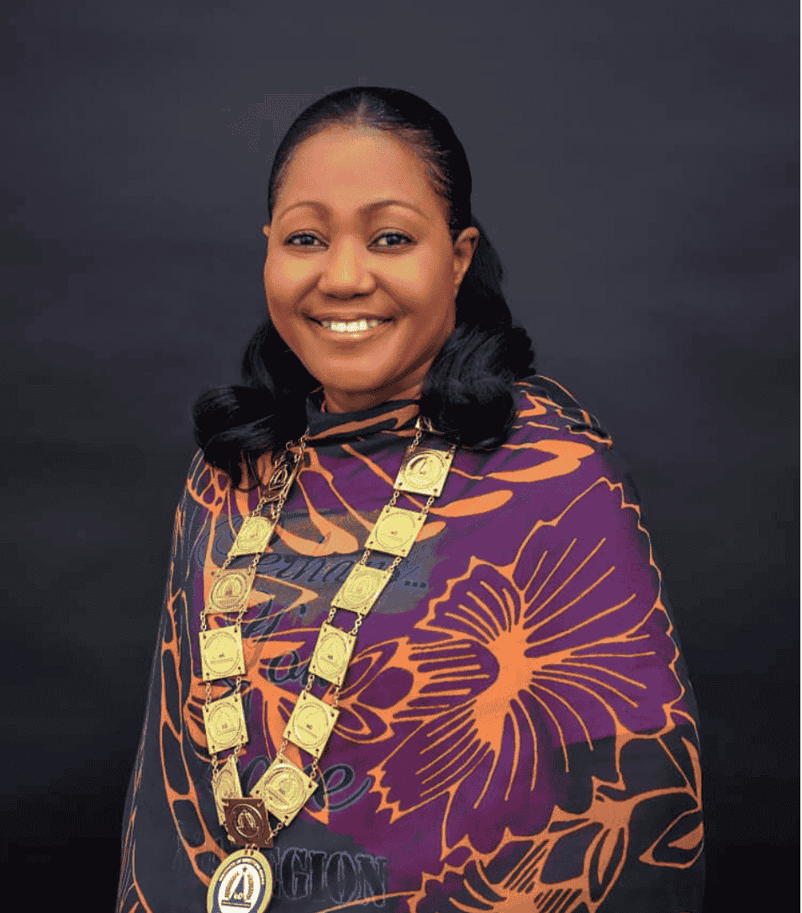
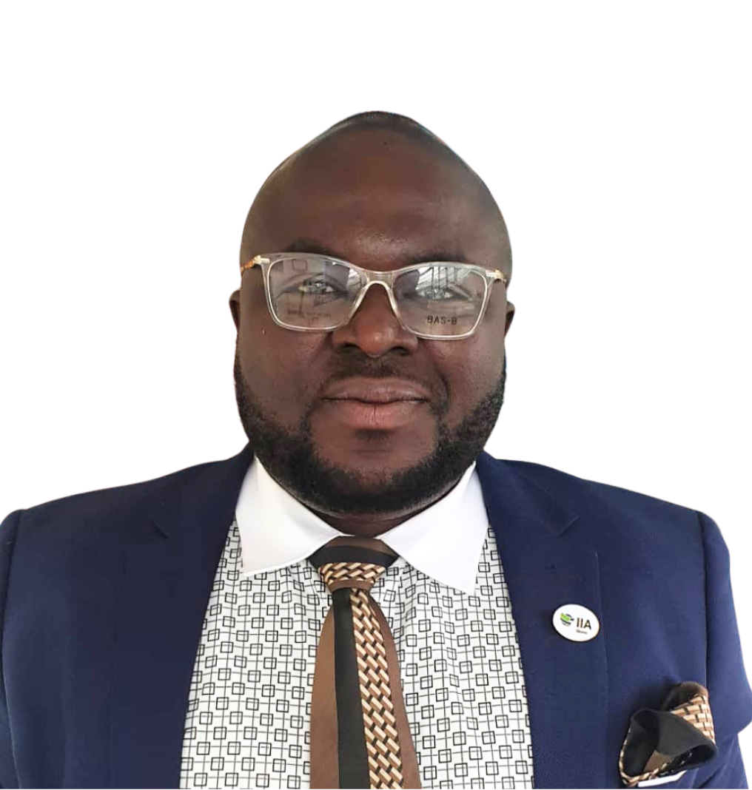
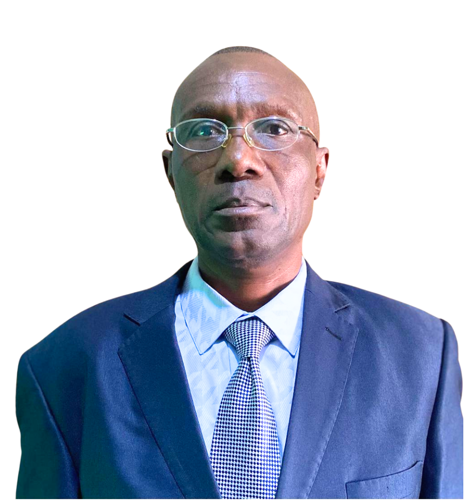
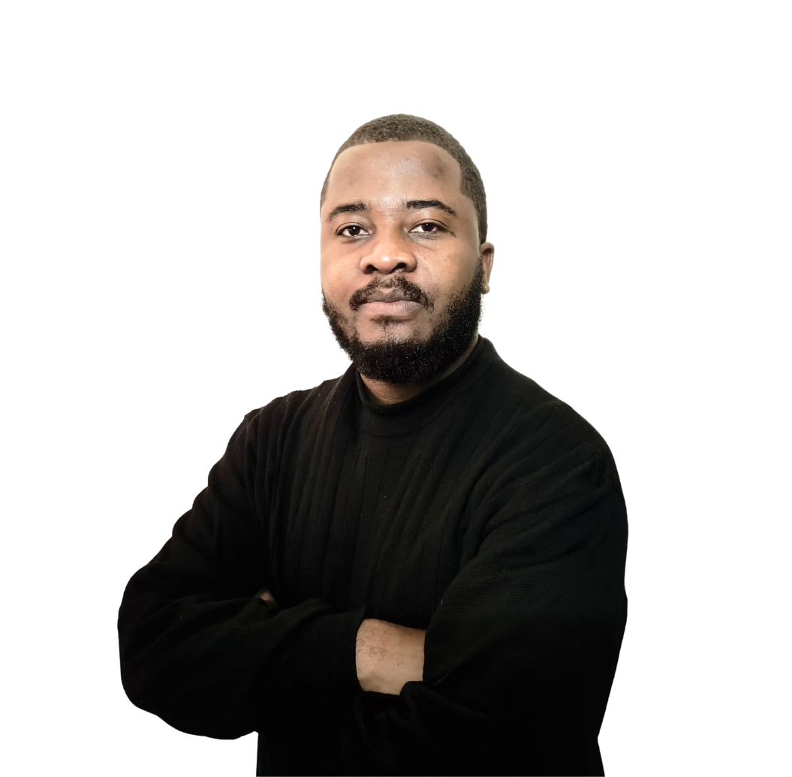

×

Introducing the dynamic leaders driving excellence and innovation at the African Corporate Governance Network

Chief Executive Officer & President/Chair, Institute of Directors-Ghana
Rev. (Mrs.) Angela Carmen Appiah is the current President/Chair of the tenth (10th) Governing Council of the Institute of Directors-Ghana (IoD-Gh), serving until Monday, 23rd June 2025.
She holds an MSc. in Advanced Practice (Leadership and Management) from the University of Cardiff, Wales, U.K and thirty (30) years of professional practice experiences across a wide field of the health industry including Clinical Care and Management, Academia, Public Administration and Regulation.
She is a multi-talented Professional with Leadership, Education and Administrative Skills complemented with rich experiences in Board Leadership and Secretaryship, Corporate Governance, Coaching, Conflict Resolution, Management and Administration, Counselling, Problem-Solving and Systems set-up and Restructuring.
A Fellow of the Institute of Directors-Ghana (FIoD-Gh), she has also served as Chair of three (3) Interim Management Committees (IMC) following nomination by the Council to manage transitions. Prior to her election as President of the Institute on 11th May 2023, she served in the capacity of the Vice-President for two (2) years.
Rev. (Mrs.) Appiah also serves as a Board Member of the African Corporate Governance Network (ACGN), a conglomerate of close to thirty (30) IoDs or governance institutes on the Continent and is presently Chairing yet another Interim Management Committee to manage a transition having been nominated by the Board. Her appointment at ACGN takes effect on Tuesday, 24th June 2025, after which she will serve as IPP (Immediate Past President) in Ex Officio capacity, playing advisory and ambassadorial roles.
She is a Pastor, Mentor, Mother, Teacher and Friend to those that the Lord has put in her care. A very passionate Nurse, she considers herself very privileged to have joined the noble profession of nursing having played varied roles and impacting her spheres of influence from bedside Nursing, Nursing Education and Administration and finally dovetailing into Nursing Regulation and Policy Formulation.
Her mantra for life: "Press on regardless!" She believes that the single most important resource on earth is the human specie created in the image of God (imago Dei). A lover of music, she evangelizes through gospel music as a member of the Music Ministry Chorale (MMC).

Director, Finance and Administration
Dr. Bernard Kisiton Larbi is a distinguished Chartered International Tax Analyst (CITA), Chartered Development Financial Analyst, and Chartered Certified Financial Accountant with a Ph.D. F. Research from Accra Business School (University of Gold Coast). He holds a Professional Doctorate in Business Analysis and Consultancy and is a Certified Forensic Investigative and Audit Professional.
With over two decades of experience in auditing, accounting, financial analysis, operations, governance, coaching, consulting and leadership, Bernard has worked across Rural and Community Banks, Savings and Loans, Investment Banks, insurance and Universal Banks. Currently serving as Group Head of Audit at KEK Insurance Brokers Ltd., he brings extensive expertise in forensic investigation skills and strategic financial planning.
Bernard possesses progressive consulting experience in Business Development Services, Market Survey and Research, Management/Due Diligence Reviews, Financial Management, Fund Management, Corporate Finance, Strategy Development, Project Appraisal, Human Resources Management and Preparation of Feasibility Studies, Business Plans and Information Memorandums.
Fun fact: Bernard's passion area is soccer, and he immediately connected with our Training Director over their shared love for the beautiful game. When he's not ensuring financial compliance, you'll find him analyzing football strategies with the same analytical mind he brings to audit work!

Director, Training, Policy and Advocacy
Benjamin Mapetese is a holder of a Masters degree in Business Administration from Women University in Africa (2012) with 25+ years experience as a Training and Organisational Development practitioner. He is currently a Business Channel Partner (Zimbabwean representative) with New Leaf Technologies, online learning specialists based in South Africa.
His experience has been gained from stints with large and international corporations that include Australian giants BHP Hartley Platinum as Training Foreman, Global giants KAIZEN Institute as Business Partner, Zimbabwean Telecommunications Giants TelOne as Business Training Manager (until 2020), and recently served as the Training, Research and Development Executive with the Institute of Directors Zimbabwe (MIoDZ). He is also the current Executive Chairperson for Kojakod Enterprises Pvt Ltd., a consulting firm in OD based in Zimbabwe.
What sets Benjamin apart is his modern facilitation approach and his knack for employee engagement programs. He has that rare combination of strategic HR development expertise and hands-on training delivery that makes learning stick, having worked across mining, manufacturing, telecommunications sectors as well as consultancy in strategy, management development and corporate governance.
His passion: Soccer! Benjamin is a former soccer Administrator having served as Technical Manager for former Premier league side Shooting Stars FC in 2010 and served for current premier league side TelOne FC in 2019 as Executive Member responsible for policy and contracts design including Technical Staff engagement. His dual love for developing people and developing football talent shows his commitment to excellence in all areas.

Director of Marketing, Events and ICT
Say hello to Pervious from Zambia - our youngest director who happens to be the perfect fit for our digital age! Pervious brings extensive experience in systems design and development, with a professional background spanning the tech world, retail sector, and scientific community - and that's exactly why he hits the ground running.
With a Bachelor's in Business Administration specializing in Computer Management & Information Systems from Rusangu University, Pervious brings that fresh, tech-savvy perspective that modern organizations desperately need. His experience spans from digital marketing management to IT systems development, making him our go-to person for all things digital transformation.
Currently driving strategic events, marketing, and ICT initiatives across our 15+ African member countries, Pervious has already proven his ability to align marketing efforts with organizational goals while executing engaging virtual and hybrid event strategies that maximize member engagement.
Hidden talent: Beyond his tech wizardry, Pervious is also a poet! This creative side adds a unique dimension to his marketing approach, bringing both analytical precision and creative flair to our brand communications across Africa.